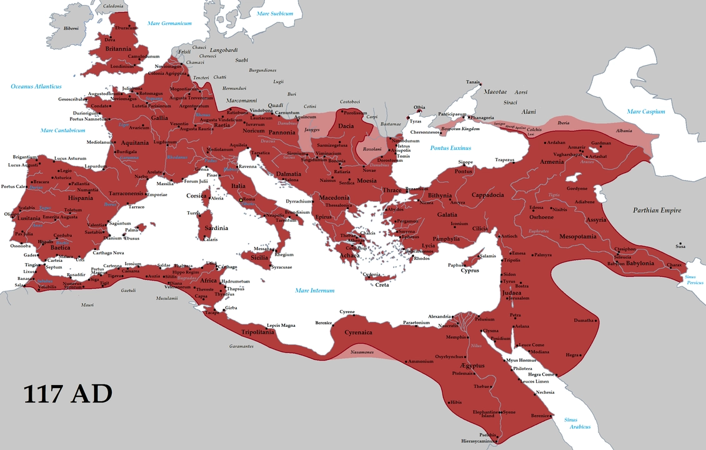

Overview of Ancient Rome
Ancient Rome began as a small city-state in central Italy in the 8th century BCE, eventually growing into one of the largest empires in history, controlling much of Europe, North Africa, and the Middle East. Known for its military prowess, political organization, and engineering feats, Ancient Rome greatly influenced the development of Western civilization.
Key Contributions
- Roman Law: The Roman legal system laid the foundation for modern legal codes. The concept of "innocent until proven guilty" and other legal principles stem from Roman law.
- Roman Roads: The Romans were exceptional engineers, building a vast network of roads (over 250,000 miles) that allowed for efficient military and economic movement.
- Introduction of the concept of republican government, shaping the government of many futures civilizations and societies.
Important Figures
- Julius Caesar: A military general and dictator who expanded Rome’s territory. His assassination in 44 BCE marked the transition from the Roman Republic to the Roman Empire.
- Augustus: The first emperor of Rome, Augustus expanded the empire, instituted reforms, and established a period of peace known as the Pax Romana.
- Marcus Aurelius: Roman emperor and Stoic philosopher, known for his work Meditations, which reflects his thoughts on virtue, duty, and leadership. He led Rome through difficult wars and is remembered for his wisdom, humility, and dedication to justice.